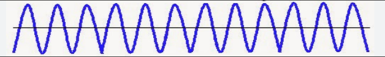
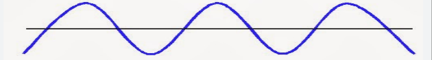
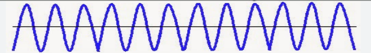
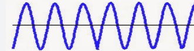
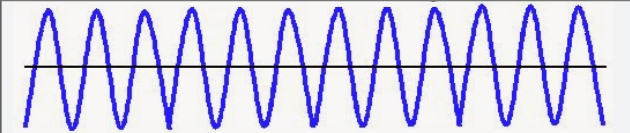
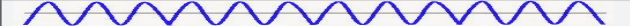
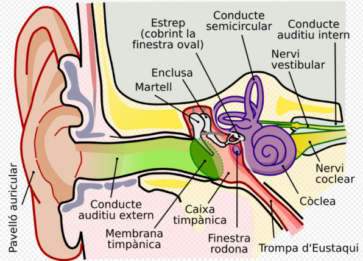

El so és una ona sonora produïda per la vibració d’un cos.
Aquesta ona es transmet per l’aire, l’aigua o un altre medi fins arribar a l’oïda.
Depèn del so, les ones tindran una forma o una altra.
L’ona d’un so agut vibra més de pressa que la d’un so greu.

Els sons aguts tenen vibracions molt ràpides.

Els sons greus tenen vibracions més lentes.
L’ona d’un so llarg vibra més temps que la d’un so curt.

Els sons llargs duren més temps.

Els sons curts duren poc temps.
L’ona d’un so fort és més àmplia que la d’un so suau.

Els sons forts tenen una vibració més gran i es perceben amb més intensitat.

Els sons suaus tenen una vibració més petita i s’escolten amb menys intensitat.

Orella externa: on l’orella capta les ones sonores, que viatgen a través del conducte auditiu.
Orella mitjana: una membrana anomenada timpà vibra en entrar en contacte amb les ones sonores i transmet les vibracions a una zona d’ossets molt petits.
Orella interna: conté la còclea, un conducte en forma de cargol que transforma les vibracions de les ones en impulsos elèctrics que arriben al cervell a través del nervi auditiu.
L'excés de soroll i de so a l'entorn es coneix com a contaminació acústica i provoca diverses alteracions al nostre cos.
Tot i que l'Organització Mundial de la Salut considera els entorns de més de 65 dB perjudicials per a la nostra salut física i mental, hi ha milions de persones a tot el món que conviuen amb aquests nivells de soroll cada dia.
Quan estem exposats a sons o sorolls d’una intensitat de fins a 80 dB, podem sentir cansament, estrès o irritabilitat i patir insomni.
Amb sons per sobre de 90 dB podem patir pèrdua d’audició.
Un soroll puntual de més de 160 dB (com una explosió o un tret) pot causar lesions irreversibles a l’oïda.
El nostre comportament és fonamental per combatre la contaminació acústica, ja que entre tots i totes podem reduir el soroll en el nostre entorn.
Per grups, mesureu el nivell de diferents sons i sorolls que hi ha a l’aula durant una classe i anoteu-ne els nivells màxims i mínims.
Per fer-ho podeu utilitzar un sonòmetre o una aplicació al portàtil.
Mesurador de decibelsEscriviu una llista de possibles mesures per reduir el soroll al centre escolar.
Prepareu diversos cartells amb les propostes i pengeu-los a les parets de l’aula i passadissos per conscienciar la resta de l’alumnat.